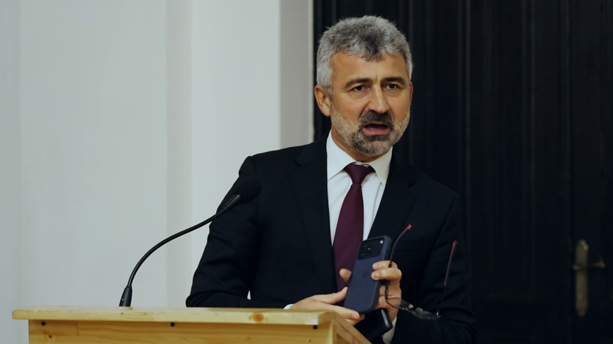
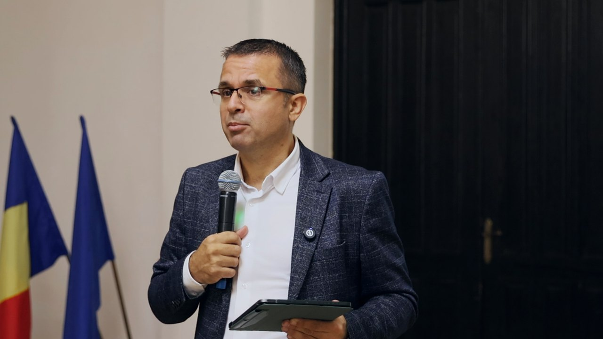
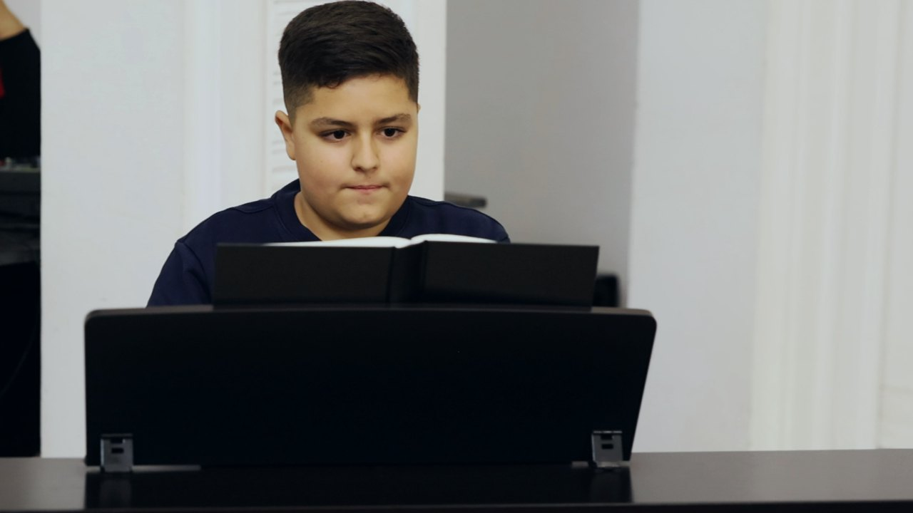
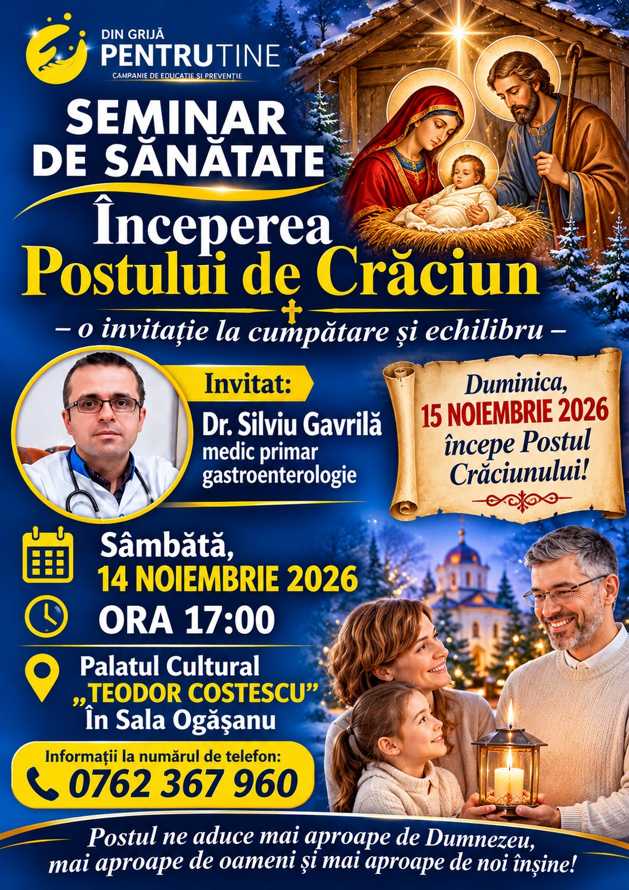

Credincioșii ortodocși intră astăzi, 15 noiembrie, într-una dintre cele mai importante perioade ale anului bisericesc: Postul Nașterii Domnului, cunoscut în tradiția populară drept Postul Crăciunului. Timp de 40 de zile, creștinii sunt chemați la rugăciune, smerenie, cumpătare și fapte bune, pregătindu-și sufletele pentru întâmpinarea marelui praznic al Nașterii Mântuitorului Iisus Hristos.
În întâmpinarea acestei perioade, sâmbătă, 14 noiembrie 2026, la Drobeta-Turnu Severin a avut loc seminarul de sănătate cu tema „Postul Crăciunului – o invitație la cumpătare și echilibru”, organizat în cadrul campaniei de educație și prevenție „Din grijă pentru tine”.
Evenimentul s-a desfășurat la Palatul Culturii „Teodor Costescu”, în Sala Ogășanu, începând cu ora 17:00, avându-l ca invitat pe dr. Silviu Gavrilă, medic primar gastroenterologie.
Cumpătare și echilibru, din perspectiva unui medic
Tema întâlnirii a adus în atenție importanța unei abordări echilibrate a postului, atât din perspectivă alimentară, cât și din cea a sănătății organismului. Perioada postului presupune schimbări în alimentație, iar cumpătarea, diversitatea alimentelor și atenția acordată propriului organism sunt aspecte importante pentru menținerea stării de sănătate.
Seara a fost deschisă de organizatori, care au amintit că întâlnirea vine chiar în pragul postului și că, într-o lume plină de îndemnuri la a consuma și a avea mai mult, postul poate fi o invitație de a ne opri, de a reflecta și de a trăi altfel. Atmosfera a fost completată de momente muzicale la pian, susținute de copii, care au fost răsplătite cu aplauzele publicului.

Ce a explicat dr. Silviu Gavrilă
În prezentarea sa, medicul gastroenterolog a pornit de la sensul postului, care nu este doar o dietă, ci o perioadă de schimbare care privește atât alimentația, cât și viața spirituală. Postul ortodox al Crăciunului începe pe 15 noiembrie și se încheie pe 24 decembrie, iar specialistul a insistat asupra ideii că el nu trebuie trăit ca un chin, ci ca o perioadă în care putem deveni mai atenți la noi înșine și la cei din jur.
Printre reperele discutate la seminar:
- speranța de viață în România a crescut de la aproximativ 36 de ani, în jurul anului 1900, la circa 76 de ani astăzi, însă odată cu prosperitatea a crescut și tendința de supraalimentare;
- zahărul și sarea – consumul mediu de zahăr ajunge la peste 20 de kilograme pe an de persoană, iar recomandarea pentru sare este de sub 5 grame pe zi;
- diabetul – în lume trăiesc cu diabet aproximativ 589 de milioane de adulți, cei mai mulți cu diabet de tip 2, legat în mare măsură de stilul de viață;
- farfuria de post – o sursă de proteine la mesele principale (fasole, linte, năut, mazăre, produse din soia), legume, fructe și cereale integrale, plus atenție la produsele „de post” care pot conține mult zahăr, sare sau grăsimi;
- hidratarea și mișcarea – apă suficientă și puțină activitate fizică zilnică, chiar și un simplu mers pe jos;
- ieșirea din post – medicul a atras atenția că excesele de după dezlegare, de la Crăciun până după Sfântul Ion, aduc an de an în spitale un val de pancreatite și colecistite acute.

Persoanele cu afecțiuni cronice, precum diabeticii, au fost sfătuite să țină postul doar sub îndrumarea medicului curant, pentru a evita, de pildă, episoadele de hipoglicemie. La final, dr. Silviu Gavrilă a răspuns întrebărilor din sală, iar o invitată a împărtășit idei de rețete de post simple și accesibile.
Postul – mai mult decât o renunțare la anumite alimente
Dincolo de rânduiala alimentară, Postul Nașterii Domnului reprezintă o adevărată călătorie duhovnicească, un timp al regăsirii de sine, al iertării și al apropierii de Dumnezeu.
Biserica ne învață că postul adevărat nu înseamnă doar abținerea de la anumite bucate, ci mai ales curățirea sufletului de gândurile rele, înfrânarea patimilor și cultivarea iubirii față de aproapele.
Rugăciunea, participarea la Sfânta Liturghie, spovedania, milostenia și ajutorarea celor aflați în nevoie sunt reperele acestei perioade de pregătire sufletească.
Postul ne cheamă să fim mai buni, mai iertători și mai atenți la suferința celor din jur.
Este vremea în care omul este îndemnat să lase deoparte graba și preocupările lumești, redescoperind liniștea interioară și frumusețea faptelor făcute din dragoste.

Credință și sănătate, într-un echilibru necesar
Inițiativa „Din grijă pentru tine” aduce în atenția comunității importanța educației pentru sănătate și a prevenției, subliniind necesitatea unei preocupări constante pentru echilibrul dintre trup și suflet.
Postul este, așadar, nu doar o perioadă de pregătire spirituală, ci și un prilej de reflecție asupra propriului stil de viață, asupra alimentației și a grijii pe care trebuie să o acordăm sănătății.
Postul Nașterii Domnului ne amintește de smerenia cu care Fiul lui Dumnezeu a venit în lume, născându-Se în ieslea din Betleem. Este o perioadă a așteptării și a speranței, în care fiecare creștin este chemat să-și deschidă inima către lumină, credință și iubire.

📅 Pe scurt – Seminarul de sănătate
Tema: „Postul Crăciunului – o invitație la cumpătare și echilibru”
Invitat: dr. Silviu Gavrilă, medic primar gastroenterologie
Când a avut loc: sâmbătă, 14 noiembrie 2026, de la ora 17:00
Unde: Palatul Culturii „Teodor Costescu”, Sala Ogășanu, Drobeta-Turnu Severin
Campania: „Din grijă pentru tine” – educație și prevenție
Postul Crăciunului 2026: 15 noiembrie – 24 decembrie
Informații: la telefon 0762 367 960
Spre Nașterea Domnului, cu inimile curate
La capătul celor 40 de zile, credincioșii vor întâmpina Nașterea Domnului cu bucurie și nădejde, sărbătoare care vestește lumii venirea Luminii și a mântuirii.
Fie ca acest post să fie pentru fiecare dintre noi un timp al înnoirii sufletești, al cumpătării, al iertării și al faptelor bune. Să avem grijă atât de suflet, cât și de trup, să ne apropiem de Dumnezeu și de semenii noștri și să întâmpinăm Nașterea Domnului cu inimile curate!
Doamne ajută și post binecuvântat tuturor!
Despre anunțul evenimentului puteți citi și în articolul nostru „Postul Crăciunului, un prilej pentru alegeri mai sănătoase”. Pentru alte evenimente și știri din comunitate, urmăriți secțiunea Social de pe MehedintiAzi.ro și pagina de Facebook Mehedinți Azi.
Redactia MehedintiAzi.ro. Foto: cadre din filmarea seminarului; afișul campaniei „Din grijă pentru tine”